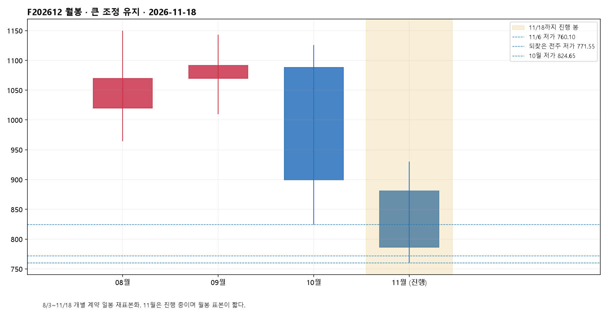
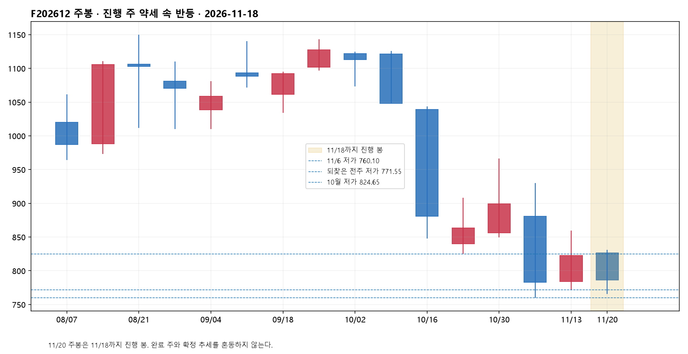
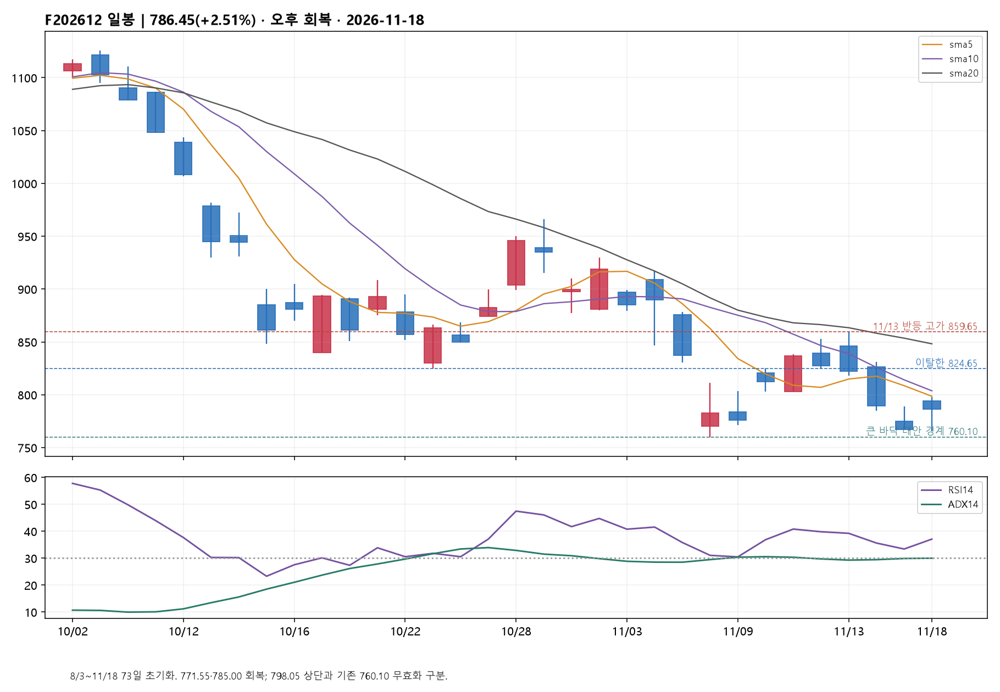
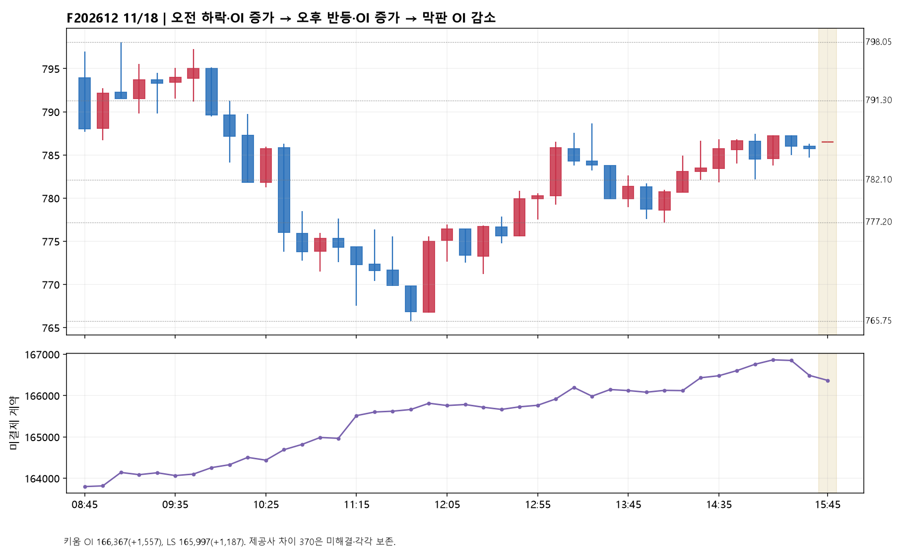
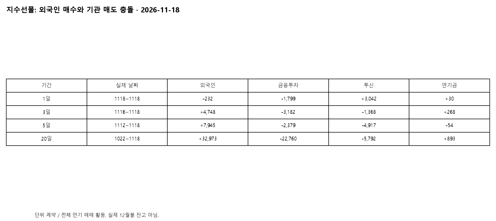
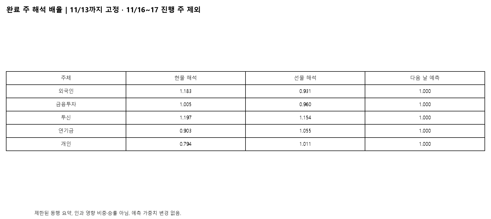
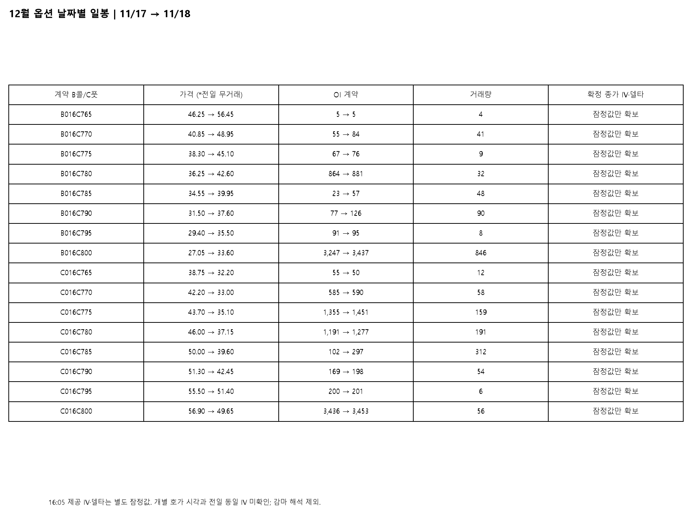

F202612 / A016C000 · 정규장 786.45 · 키움 OI 166,367 / LS 165,997 · 이후 야간 미반영
12월물 786.45(+2.51%). 오전 급락 뒤 오후에 가격과 OI가 함께 회복했다. 어제의 하방 연장 우세를 그대로 유지하지 않고, 일봉 하락 추세 안의 회복 시도로 판단을 바꾼다. 월봉 조정·진행 주 약세는 남아 있지만 771.60·776.55·785.00을 되찾은 점은 실제 개선이다. 첫 눌림은 782.10~783.80, 회복 유지의 다음 경계는 777.20~779.95다. 789.00~791.30 위 10분봉 마감과 재지지가 확인되면 793.95~798.05를 점검한다. 777.20 이탈 후 재저항이면 771.20~771.60, 765.75 재시험 위험이 커지고, 원래 큰 바닥 가설의 철회 기준은 760.10 일봉 종가 이탈·반등 재저항이다. 이후 야간은 미반영이다.
어제 제시한 760.10 재시험 위험은 오늘 오전 저가 765.75까지 이어졌지만 760.10 자체는 닿지 않았다. 이후 771.60·776.55·785.00을 회복했으므로 오후까지 하락 우세라고 고집할 수 없다. 반대로 전일 종가 대비 +2.51%라도 시가 793.95보다 종가가 0.94% 낮아 하루 내내 강한 추세 상승이었다고 해석하지 않는다. 선호 가설은 11/13 859.65 이후 하락 구간 안에서 765.75를 출발점으로 한 반등이다. 대안은 11/6 760.10을 깨지 않고 큰 바닥을 재시험한 뒤 상위 상승을 준비하는 경우다. 765.75는 단일 당일 저점이지 새 확정 지지선이 아니다. 789.00~791.30, 798.05, 이어 802.95~803.76의 회복이 쌓여야 대안에 무게를 옮긴다. 818.10~824.65 일봉 회복은 더 큰 구조 회복 조건이다. 하위파가 불충분해 세부 차수와 상승 3파 시작은 미확정이다.
오늘 지수선물 전체 만기 순매매는 외국인 -232, 개인 -1,156, 기관계 +1,389계약이다. 기관 내부에서 투신 +3,042·보험 +117·연기금 +30·은행 +7이 금융투자 -1,799와 갈렸다. 어제 투신 -1,214에서 오늘 매수로 돌아선 점을 반등의 주요 동행 근거로 본다. 투신과 다른 기관 매수가 외국인·개인·금융투자 매도의 상대편을 이루었지만 계좌별 직접 대응과 선행성은 알 수 없다. 최근 3일·5일·20일 외국인 선물 순매매는 +4,748·+7,945·+32,973계약, 투신은 -1,368·-4,917·-5,792계약이다. 오늘 투신 매수는 개선이지만 최근 누적 매도 전체가 뒤집힌 것은 아니다. 기관 합계에 세부 주체를 다시 더하지 않는다.
현물도 투신이 매수로 바뀌었다. LS 현물 금액 원단위에서 외국인 -3,352, 금융투자 +3,107, 투신 +2,206, 연기금 +660이다. 기관 합계는 t1617 +5,056, t1664 +5,057로 1 차이가 남는다. 같은 재조회 계열에서 외국인 현물 매도는 전일 -14,189보다 줄었다. 금융투자만 방어하던 구성에서 투신·연기금까지 현물 매수가 넓어진 점은 회복에 유리하다. 다만 외국인은 현물·지수선물·주식선물(-48,203계약)을 모두 팔아 전체 주체 합의는 아니다. 프로그램 원단위 총계 +109,737은 비차익 +198,442가 차익 -88,705를 상쇄했다. 최근 3·5·20일 프로그램은 여전히 순매도여서 당일 개선과 누적 약세를 구분한다. LS 마감 스냅샷 시장 베이시스 -1.26, 이론 베이시스 +1.58, 차이 -2.84는 선물 할인 상태를 보인다. 15:45 선물과 15:30 현물의 비동시 종가 및 제공사 이론값이므로 실행 가능한 차익으로 계산하지 않는다. 현물·프로그램 고정 원화 단위의 독립 확인이 없어 원단위를 조원으로 변환하지 않았다.
10분봉 표시시각 09:45→11:45에는 가격 795.05→766.85(-28.20), OI 164,100→165,662(+1,562)로, 미청산 계약이 쌓이는 동안 매도 쪽 가격 압력이 강했다. 11:45→15:15에는 가격 766.85→786.00(+19.15), OI 165,662→166,848(+1,186)로 바뀌었다. 오후 회복을 모두 숏 청산이라고 단정할 수 없고 미결제 계약 확대를 동반한 매수 가격 압력이 관찰된다. 마지막 15:15→15:45는 가격 +0.45, OI -481로 앞 구간과 달리 순청산이 겹쳤다. 최종 OI 한 숫자가 오전과 오후의 서로 다른 흐름을 지워서는 안 된다. 투신 당일 +3,042와 오후 회복은 동행 단서지만 시간대별 주체·신규/청산은 확인되지 않았다. 0786 막판 그래프의 급변은 집계 갱신과 실제 체결 시각이 일치한다고 단정하지 않는다.
키움 정규장 OI는 166,367로 전일 164,810 대비 +1,557계약이다. 전일 저장 원본도 164,810으로 일치한다. LS 16:05 시세 스냅샷과 17시 이후 날짜 지정 일봉은 모두 165,997·전일 대비 +1,187이다. 두 제공사 현재값 차이 370은 원인 미확인으로 보존하며 합치지 않는다. 양쪽 모두 증가 방향이지만 정확한 증가폭은 출처별로 다르다. 본문 장중 OI는 원래 키움 시계열을 일관되게 사용한다. 키움 일봉 거래량 128,156과 키움 분봉 합계·LS 일봉 124,646은 3,510 차이여서 정확한 VWAP·거래량 매물대는 제외한다. 2027년 3월물은 종가 776.50, 거래량 68, OI 7,455로 별도 표시한다. 보고 OI 증가 172가 거래량 68보다 커 집계 범위가 해결되지 않았으므로 롤오버·신규 포지션 증거로 사용하지 않는다.
외국인 콜은 +973계약이나 금액 -14억원, 풋은 +2,429계약이나 금액 -9억원이다. 수량 증가만으로 대규모 상방 콜 매수나 하방 풋 매수를 확정할 수 없는 조합이다. 가격대가 다른 계약의 교환·스프레드·헤지 등 반대 설명이 가능하되 목적은 미확정이다. 날짜가 붙은 12월물 765~800의 8개 행사가, 콜·풋 16계약을 조회했다. 790콜 가격 31.50→37.60·OI 77→126(+49), 800콜 27.05→33.60·OI 3,247→3,437(+190)은 가격 상승과 미결제 확대가 함께 나타났다. 790풋 가격 51.30→42.45·OI 169→198(+29), 785풋 OI +195도 함께 확인돼 콜 쪽만 떼어 읽지 않는다. 16:05 보존 체인과 날짜별 가격·OI·거래량은 16계약 모두 일치했다. 제공 IV·델타도 확보했지만 개별 호가 체결시각은 미확인이다. 예컨대 800콜 IV 48.78%·델타 0.4801, 790콜 IV 48.13%·델타 0.5211은 잠정 스냅샷 값이며 확정 종가 IV 변화로 쓰지 않는다. 790콜 호가는 1.89~103.75로 과도하게 벌어졌고 790풋 매도호가는 0이라 해당 호가 기반 추론은 제외했다. 키움 대표 IV는 68.84→73.32, 콜 53.48→50.60, 풋 85.15→93.86이다. 지수 반등에도 풋 대표 IV가 확대돼 하방 위험 경계가 사라졌다고 보기는 어렵다. 대표 IV와 고정 행사가·고정 델타 스큐는 다르다.
11월 월물 옵션 만기 11/12 이후 네 번째 정규 거래일이다. 현재 12월 선물·월물 옵션 만기는 12/10이며, 내일 11/19 목요일 위클리 만기와 구분한다. 공식 월·목 위클리 및 월물 두 번째 목요일 규칙과 KRX 휴장일 원문을 확인했다. 이번 12월물 체인에는 위클리가 포함되지 않아 내일 위클리 행사가별 감마·청산 압력은 판단 불가다. 오늘 반등으로 만기 후 하락이 계속된다고 단정할 근거는 약해졌지만 현물 외국인 매도·선물 할인·풋 대표 IV 확대는 남아 있다. 만기·헤지 목적을 방향 매매로 확정하지 않는다.
완료 주 11/9~11/13 및 그때까지 20일 동행으로 고정한 해석 배율은 현물 외국인 1.183·투신 1.197, 선물 외국인 0.931·투신 1.154다. 따라서 오늘 투신 현물·선물 매수 전환과 현물 매수 주체 확산에 설명상의 무게를 주고, 외국인 선물 소폭 매도만으로 반등을 부정하지 않는다. 진행 주 11/16~18은 배율 산정에서 제외했다. 10/12~11/18 관측에서 외국인·투신 현물 동반매수+상승 뒤 다음 날 상승은 3/7(42.9%), 동반매도+하락 뒤 다음 날 하락은 6/13(46.2%)다. 단순 하락일 다음 날 하락 9/17(52.9%)보다 높지 않다. 선물은 각각 1/3·0/2로 표본이 작다. 오늘 외국인과 투신은 방향이 달라 동반 신호 자체가 아니다. 인과적 영향 비중이나 내일 확률로 바꾸지 않으며 예측 배율은 1.0을 유지한다.
F202612 개별 계약 8/3~11/18의 거래량 있는 73일로 일봉 지표와 월·주봉을 계산했다. 원천 전체 710일과 유동성 있는 사용 구간을 구분한다. 11월 월봉·11/20 주봉은 진행 봉이다. 10/12~11/18 28거래일의 동행 비교와 1·3·5·15·20일 흐름을 확인했다. 9/11~11/18 45거래일 LS 단일 원천 전체 만기 관찰 누적은 외국인 +31,709·기관 -30,160·투신 -7,333계약이다. 현재 만기 구간의 거래 활동이지 실제 12월물 보유량·평단이 아니다. 전일 저장값과 재조회한 현물 값의 차이는 원본과 함께 보존하며 최신 동일 출처 시계열로 따로 계산했다. 서로 다른 만기 잔고를 합치지 않는다.
KOSPI 5,067.44(+1.99%), KOSPI200 787.71(+2.20%)로 선물 반등을 확인한다. KOSPI와 12월 선물 OHLC는 10/12~11/18 28거래일·224개 셀을 키움/LS로 대조해 일치했다. 다만 KOSPI도 시가보다 0.62% 낮아 전일 대비 상승과 장중 강세 지속은 구분한다. 국내·미국·일본 다중 시간대 부록과 Squeeze/ADX 연구층의 최신 날짜는 11/12 또는 그 이전이라 오늘 근거에서 제외했다. 주도주를 뺀 나머지 시장 수급·시장 폭·동일 기준 해외 월주일분봉은 이번 분석에서 검증하지 못했다. 선물 회복에 대한 현물 확인은 가능하지만 시장 전체 매수 확산의 폭까지 확정하지 않는다.

10월 저가 824.65 아래인 11월 진행 봉. 일중 반등만으로 상위 상승 전환을 선언하지 않는다.

완료 주 11/13 종가 822.35. 이번 주 저가 765.75 이후 786.45 회복, 전주 종가보다 아직 낮다.

어제 제시한 760.10 재시험 위험은 오늘 오전 저가 765.75까지 이어졌지만 760.10 자체는 닿지 않았다. 이후 771.60·776.55·785.00을 회복했으므로 오후까지 하락 우세라고 고집할 수 없다. 반대로 전일 종가 대비 +2.51%라도 시가 793.95보다 종가가 0.94% 낮아 하루 내내 강한 추세 상승이었다고 해석하지 않는다. 선호 가설은 11/13 859.65 이후 하락 구간 안에서 765.75를 출발점으로 한 반등이다. 대안은 11/6 760.10을 깨지 않고 큰 바닥을 재시험한 뒤 상위 상승을 준비하는 경우다. 765.75는 단일 당일 저점이지 새 확정 지지선이 아니다. 789.00~791.30, 798.05, 이어 802.95~803.76의 회복이 쌓여야 대안에 무게를 옮긴다. 818.10~824.65 일봉 회복은 더 큰 구조 회복 조건이다. 하위파가 불충분해 세부 차수와 상승 3파 시작은 미확정이다.

10분봉 표시시각 09:45→11:45에는 가격 795.05→766.85(-28.20), OI 164,100→165,662(+1,562)로, 미청산 계약이 쌓이는 동안 매도 쪽 가격 압력이 강했다. 11:45→15:15에는 가격 766.85→786.00(+19.15), OI 165,662→166,848(+1,186)로 바뀌었다. 오후 회복을 모두 숏 청산이라고 단정할 수 없고 미결제 계약 확대를 동반한 매수 가격 압력이 관찰된다. 마지막 15:15→15:45는 가격 +0.45, OI -481로 앞 구간과 달리 순청산이 겹쳤다. 최종 OI 한 숫자가 오전과 오후의 서로 다른 흐름을 지워서는 안 된다. 투신 당일 +3,042와 오후 회복은 동행 단서지만 시간대별 주체·신규/청산은 확인되지 않았다. 0786 막판 그래프의 급변은 집계 갱신과 실제 체결 시각이 일치한다고 단정하지 않는다.

오늘 지수선물 전체 만기 순매매는 외국인 -232, 개인 -1,156, 기관계 +1,389계약이다. 기관 내부에서 투신 +3,042·보험 +117·연기금 +30·은행 +7이 금융투자 -1,799와 갈렸다. 어제 투신 -1,214에서 오늘 매수로 돌아선 점을 반등의 주요 동행 근거로 본다. 투신과 다른 기관 매수가 외국인·개인·금융투자 매도의 상대편을 이루었지만 계좌별 직접 대응과 선행성은 알 수 없다. 최근 3일·5일·20일 외국인 선물 순매매는 +4,748·+7,945·+32,973계약, 투신은 -1,368·-4,917·-5,792계약이다. 오늘 투신 매수는 개선이지만 최근 누적 매도 전체가 뒤집힌 것은 아니다. 기관 합계에 세부 주체를 다시 더하지 않는다.

완료 주 11/9~11/13 및 그때까지 20일 동행으로 고정한 해석 배율은 현물 외국인 1.183·투신 1.197, 선물 외국인 0.931·투신 1.154다. 따라서 오늘 투신 현물·선물 매수 전환과 현물 매수 주체 확산에 설명상의 무게를 주고, 외국인 선물 소폭 매도만으로 반등을 부정하지 않는다. 진행 주 11/16~18은 배율 산정에서 제외했다. 10/12~11/18 관측에서 외국인·투신 현물 동반매수+상승 뒤 다음 날 상승은 3/7(42.9%), 동반매도+하락 뒤 다음 날 하락은 6/13(46.2%)다. 단순 하락일 다음 날 하락 9/17(52.9%)보다 높지 않다. 선물은 각각 1/3·0/2로 표본이 작다. 오늘 외국인과 투신은 방향이 달라 동반 신호 자체가 아니다. 인과적 영향 비중이나 내일 확률로 바꾸지 않으며 예측 배율은 1.0을 유지한다.

외국인 콜은 +973계약이나 금액 -14억원, 풋은 +2,429계약이나 금액 -9억원이다. 수량 증가만으로 대규모 상방 콜 매수나 하방 풋 매수를 확정할 수 없는 조합이다. 가격대가 다른 계약의 교환·스프레드·헤지 등 반대 설명이 가능하되 목적은 미확정이다. 날짜가 붙은 12월물 765~800의 8개 행사가, 콜·풋 16계약을 조회했다. 790콜 가격 31.50→37.60·OI 77→126(+49), 800콜 27.05→33.60·OI 3,247→3,437(+190)은 가격 상승과 미결제 확대가 함께 나타났다. 790풋 가격 51.30→42.45·OI 169→198(+29), 785풋 OI +195도 함께 확인돼 콜 쪽만 떼어 읽지 않는다. 16:05 보존 체인과 날짜별 가격·OI·거래량은 16계약 모두 일치했다. 제공 IV·델타도 확보했지만 개별 호가 체결시각은 미확인이다. 예컨대 800콜 IV 48.78%·델타 0.4801, 790콜 IV 48.13%·델타 0.5211은 잠정 스냅샷 값이며 확정 종가 IV 변화로 쓰지 않는다. 790콜 호가는 1.89~103.75로 과도하게 벌어졌고 790풋 매도호가는 0이라 해당 호가 기반 추론은 제외했다. 키움 대표 IV는 68.84→73.32, 콜 53.48→50.60, 풋 85.15→93.86이다. 지수 반등에도 풋 대표 IV가 확대돼 하방 위험 경계가 사라졌다고 보기는 어렵다. 대표 IV와 고정 행사가·고정 델타 스큐는 다르다.
2026-11-18T17:08:54.970334+09:00 · 조건부 해설, 자동 주문·비중 변경 아님